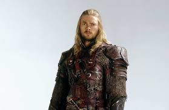

- Bienvenu mon ami, nous sommes les peuples libres, ceux qui défient la volonté de Sauron. Dans nos rangs nous comptons les elfes, les nains et les hommes majoritairement. Vous êtes inscrit pour devenir un soldat et sauver la Terre du Milieu
- Nous sommes moins nombreux que les légions du Mordor, mais nos coeurs sont sans failles.
- Je me nomme Irlandil, comme vous pouvez vous en douter je suis un elfe. J’ai été envoyé par le seigneur Elrond, le roi de la dernière demeure des elfes sur la Terre du Milieu, Focombe. Suivant votre choix, vous allez vous retrouver dans des camps d’entraînement propre à chacune des races.
- Pour les elfes sa sera Focombe, pour les nains vous irez à la montagne d’Erebor et enfin pour les humains c’est à Minas Tirith.
- Sur ce compagnon, je vous laisse combattez fièrement !
- Le peuple des hommes est l’un plus rependu des peuples libres, même si certain ont choisi de servir Sauron, tel que les Harads, les runs ou encore les pirates de Dun, les plus connus sont les Nasguls. Les humains du côté des peuples libres ont le Gondor et le Rohan qui comporte la plus grande population humaine. Leurs armées pour la première se composent d’unité équitable que ce soit en cavalerie, fantassins ou archers. Pour la deuxième, elle est surtout réputée pour sa cavalerie car le Rohan se situe dans les Grandes Plaines. Ils utilisent surtout des lances, des épées et des arcs longs.
- 
hidden

- Premier né des enfants d’Ilvatar, ils se sont éveillés en l’an 1050 de l’âge des arbres, sur les rives d’un lac à l’Ouest de la Terre du Milieu et furent découverts par les espions de Mailcord. Ce dernier en ordonna la capture et donna naissance aux premiers orques. Les elfes sont un peuple fière, discret mais doté des meilleurs archers . C’est d’ailleurs un elfe du nom de Sauron qui créa les anneaux de pouvoirs avec l’aide du forgeron Célebrimbor, un seigneur elfe d’antan tué par Sauron une fois que celui-ci n’eut plus besoin de lui. Leurs armées se composent en grande partie d’archers redoutés par les armées de la Terre du Milieu.
- Les nains sont un peuple vivant dans les mines pour extraire toutes les richesses du sol. Ils sont surtout connus pour leurs soifs d'or, du combat et de la beuverie. Les nains sont des êtres de petite taille . Ils refont surface pour conquérir leur pour, grâce à leur imposante richesse et à leurs puissantes armées composées d’infanteries lourdes. Ils trancheront leurs destinées à grands coups de hache.


- Les Ents, sont les esprits de la forêt, des créatures à l'apparence d'arbres qui sont le peuple le plus ancien de la Terre du Milieu. L'aspect des Ents peut varier de manière considérable selon l'essence d'arbre à laquelle ils s'identifient. Quoique n'étant pas des guerriers, ils ont pour rôle de protéger les forêts de la Terre du Milieu des orques ou autres créatures envahissantes. Ils ne prennent pas de décisions rapides et sont lents de tempérament, mais peuvent être des adversaires redoutables, comme le montre leur attaque sur l'Isengard, qui réduit à néant les forces de Saroumane.